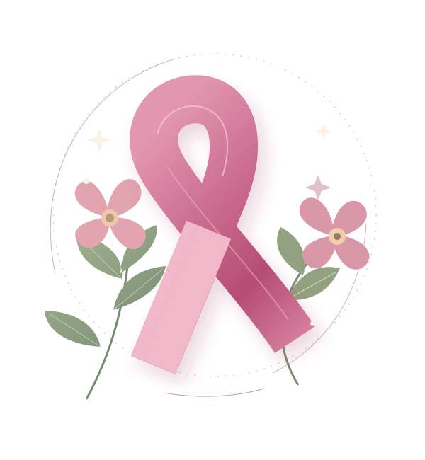

Être attentive aux changements
Une boule, une modification de la peau, du mamelon ou un écoulement inhabituel ? Prenez rendez-vous, même entre deux dépistages. Un changement ne signifie pas forcément un cancer, mais mérite un avis médical.
OCTOBRE ROSE · CHAQUE CONVERSATION COMPTE
Un mois pour faire circuler l'information.
Et toute l'année
pour prendre soin de nous.
S'informer, c'est déjà faire un premier pas.

Un petit ruban.
Un grand élan.
Derrière le ruban, des personnes, des proches et des histoires. Octobre Rose nous invite à parler du cancer du sein avec attention, sans tabou.
Chaque octobre, la mobilisation met en lumière la prévention, le dépistage et le soutien aux personnes concernées. L'objectif : rendre l'information plus accessible et encourager chacun à faire le point sur sa santé.
On n'a pas besoin d'avoir toutes les réponses pour commencer une conversation. Une écoute, un renseignement fiable, un rendez-vous : chaque geste a sa place.
Trouver mon premier gesteLe repère d'âge du dépistage organisé en France.
L'intervalle habituel entre deux mammographies dans ce programme.
Le bon moment pour signaler un changement ou demander conseil.
Le dépistage organisé concerne les femmes de 50 à 74 ans, sans symptôme ni risque particulier. Un suivi différent peut être nécessaire selon la situation. Source : Assurance Maladie
Des repères simples.
Un professionnel pour vous accompagner.
Une boule, une modification de la peau, du mamelon ou un écoulement inhabituel ? Prenez rendez-vous, même entre deux dépistages. Un changement ne signifie pas forcément un cancer, mais mérite un avis médical.
Votre âge, vos antécédents et votre situation peuvent modifier les recommandations. Parlez-en à votre médecin ou à votre sage-femme pour connaître le suivi qui vous correspond.
Le dépistage a des bénéfices et des limites. Demandez comment se déroule l'examen, ce que signifient les résultats et quelles sont les étapes suivantes. Vous avez le droit de prendre le temps de comprendre.
Un point de départ pour en parler avec un professionnel de santé.
Le dépistage organisé ne commence pas avant 50 ans. Des antécédents personnels ou familiaux peuvent justifier un suivi spécifique plus tôt : demandez conseil à un professionnel.
Sans symptôme ni risque particulier, le programme prévoit une mammographie tous les deux ans. Si vous n'avez pas reçu d'invitation, contactez votre caisse d'assurance maladie ou votre médecin.
Après 74 ans, le suivi se décide individuellement avec votre médecin, selon votre état de santé et votre situation. L'arrêt des invitations ne remplace pas cette discussion.
À tout âge, un symptôme ou un changement inhabituel nécessite un avis médical : n'attendez pas une invitation au dépistage.
La solidarité prend mille formes.
Choisissez celle qui vous
ressemble.
Pour aller plus loin,
auprès d'organismes de référence.
Le parcours de dépistage, les examens et les démarches pratiques.
ameli.fr S'INFORMER SUR LE CANCERDes informations de référence sur la prévention et les cancers.
cancer.fr TROUVER DU SOUTIENÉcoute, accompagnement et mobilisation près de chez vous.
ligue-cancer.netON EN PARLE ?
Une information claire peut aider à franchir le premier pas.
Le dépistage cherche à détecter un cancer avant l'apparition de symptômes. Entre 50 et 74 ans, sans risque particulier, le programme organisé propose une mammographie tous les deux ans. Un professionnel peut vous expliquer les bénéfices et les limites de cet examen.
Non. Un changement ou une image inhabituelle peut avoir plusieurs causes. Des examens complémentaires peuvent être nécessaires pour en déterminer l'origine. Prenez rendez-vous et laissez un professionnel vous accompagner.
Signalez-les à votre médecin, notamment les cancers du sein ou de l'ovaire. Selon votre histoire familiale, un suivi adapté ou un avis spécialisé peut être proposé. Les recommandations du dépistage organisé ne s'appliquent pas à toutes les situations.
Oui, même si c'est rare. Une boule ou un changement au niveau du sein doit aussi amener un homme à consulter. La vigilance et l'écoute concernent tout le monde.
Demandez-lui ce qui lui ferait du bien : être écoutée, accompagnée à un rendez-vous ou aidée au quotidien. Respectez son rythme et ses choix. Les associations peuvent également proposer un soutien aux proches.